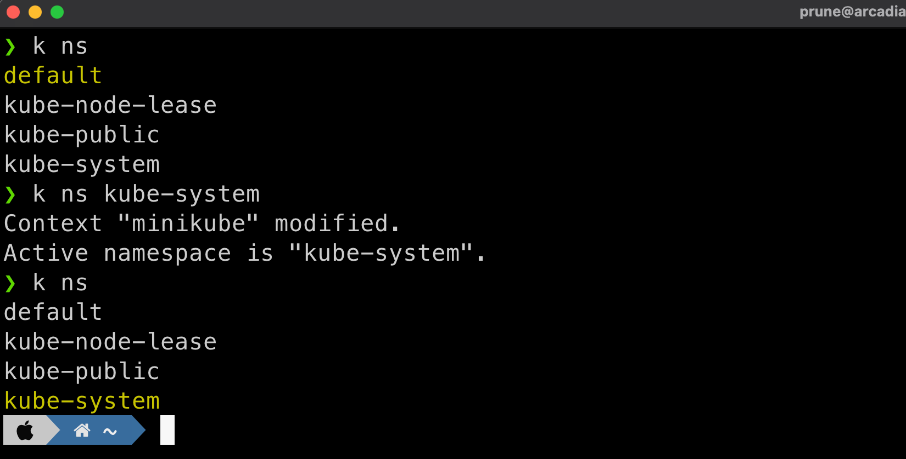

Extending kubectl¶
Couple years ago K8s community introduced an easy way to extend kubectl via plugins.
Plugins are in fact "applications" (executable files) named kubectl-<plugin_name>, that are executed when you call kubectl plugin_name.
Krew is the plugin manager for kubectl command-line tool and it's maintained by the Kubernetes SIG CLI community.
Krew helps you:
- discover kubectl plugins,
- install them on your machine,
- and keep the installed plugins up-to-date. There are 207 kubectl plugins currently distributed on Krew.
Krew¶
Krew is an example of such a kubectl plugin that act as a plugin manager for kubectl. It pre-dates the plugin addition in kubectl and may seem useless now, but it still has it's role to play.
Install¶
Please refer to the official install doc.
This one is using krew itself to install krew.
Note
krew installs plugins in $KREW_ROOT if you set it or $HOME/.krew. You have to then ensure $HOME/.krew is in your path.
Add this to your .zshrc or .bashrc:
(
set -x; cd "$(mktemp -d)" &&
OS="$(uname | tr '[:upper:]' '[:lower:]')" &&
ARCH="$(uname -m | sed -e 's/x86_64/amd64/' -e 's/\(arm\)\(64\)\?.*/\1\2/' -e 's/aarch64$/arm64/')" &&
KREW="krew-${OS}_${ARCH}" &&
curl -fsSLO "https://github.com/kubernetes-sigs/krew/releases/latest/download/${KREW}.tar.gz" &&
tar zxvf "${KREW}.tar.gz" &&
./"${KREW}" install krew
)
- Make sure git is installed.
- Download
krew.exefrom the Releases page to a directory. - Launch a command prompt (
cmd.exe) with administrator privileges (since the installation requires use of symbolic links) and navigate to that directory. - Run the following command to install krew:
- Add the
%USERPROFILE%\.krew\bindirectory to yourPATHenvironment variable (how?) - Launch a new command-line window.
- Run
kubectl krewto check the installation.
Usage¶
NAME DESCRIPTION INSTALLED
access-matrix Show an RBAC access matrix for server resources no
blame Show who edited resource fields. no
cert-manager Manage cert-manager resources inside your cluster no
ctx Switch between contexts in your kubeconfig yes
...
Krew Plugins¶
Install plugins that will be used in the tutorial:
- ctx: current cluster
Contextand quick context changes - ns: current
Namespaceand quick namespace changes - whoami: who the cluster thinks you are from your authentication
- who-can: RBAC rules introspection
- view-secret: directly view secret content without having to decode
Install them with this command:
Generating the application manifest¶
The GoWebApp application was previously deployed with a hardcoded password for Mysql. This is not optimal and not recommended. It was done like this because it's a DEMO, and not real production cluster.
Note
Usually all application's deployment files (the YAML) should be managed in a versioned repository and should never be modified directly on the cluster.
For this DEMO, still, we are going to use the currently deployed application and modify it.
Now that the application is running and everything is fine, it is a good idea to store the resulting yaml in our own repo.
First dump the gowebapp deployment into a file. By using the --output yaml (-o yaml) option, kubectl will dump the full file, including some fields internal to the current deployment that are not needed:
apiVersion: apps/v1
kind: Deployment
metadata:
annotations:
deployment.kubernetes.io/revision: "1"
kubectl.kubernetes.io/last-applied-configuration: |
{"apiVersion":"apps/v1","kind":"Deployment","metadata":{"annotations":{},"labels":{"run":"gowebapp"},"name":"gowebapp","namespace":"default"},"spec":{"replicas":1,"selector":{"matchLabels":{"run":"gowebapp"}},"template":{"metadata":{"labels":{"run":"gowebapp"}},"spec":{"containers":[{"env":[{"name":"DB_PASSWORD","value":"rootpasswd"}],"image":"ghcr.io/cloud-native-canada/k8s_setup_tools:app","livenessProbe":{"httpGet":{"path":"/register","port":9000},"initialDelaySeconds":15,"timeoutSeconds":5},"name":"gowebapp","ports":[{"containerPort":9000}],"readinessProbe":{"httpGet":{"path":"/register","port":9000},"initialDelaySeconds":25,"timeoutSeconds":5},"resources":{"limits":{"cpu":"50m","memory":"100Mi"},"requests":{"cpu":"20m","memory":"10Mi"}}}]}}}}
creationTimestamp: "2022-10-25T16:32:28Z"
generation: 1
labels:
run: gowebapp
name: gowebapp
namespace: default
resourceVersion: "2662"
uid: c0085020-845c-468e-a95e-9bb2e908dc2b
spec:
progressDeadlineSeconds: 600
replicas: 1
revisionHistoryLimit: 10
selector:
matchLabels:
run: gowebapp
strategy:
rollingUpdate:
maxSurge: 25%
maxUnavailable: 25%
type: RollingUpdate
template:
metadata:
creationTimestamp: null
labels:
run: gowebapp
spec:
containers:
- env:
- name: DB_PASSWORD
value: rootpasswd
image: ghcr.io/cloud-native-canada/k8s_setup_tools:app
imagePullPolicy: IfNotPresent
livenessProbe:
failureThreshold: 3
httpGet:
path: /register
port: 9000
scheme: HTTP
initialDelaySeconds: 15
periodSeconds: 10
successThreshold: 1
timeoutSeconds: 5
name: gowebapp
ports:
- containerPort: 9000
protocol: TCP
readinessProbe:
failureThreshold: 3
httpGet:
path: /register
port: 9000
scheme: HTTP
initialDelaySeconds: 25
periodSeconds: 10
successThreshold: 1
timeoutSeconds: 5
resources:
limits:
cpu: 50m
memory: 100Mi
requests:
cpu: 20m
memory: 10Mi
terminationMessagePath: /dev/termination-log
terminationMessagePolicy: File
dnsPolicy: ClusterFirst
restartPolicy: Always
schedulerName: default-scheduler
securityContext: {}
terminationGracePeriodSeconds: 30
status:
availableReplicas: 1
conditions:
- lastTransitionTime: "2022-10-25T16:33:09Z"
lastUpdateTime: "2022-10-25T16:33:09Z"
message: Deployment has minimum availability.
reason: MinimumReplicasAvailable
status: "True"
type: Available
- lastTransitionTime: "2022-10-25T16:32:28Z"
lastUpdateTime: "2022-10-25T16:33:09Z"
message: ReplicaSet "gowebapp-5994456fcb" has successfully progressed.
reason: NewReplicaSetAvailable
status: "True"
type: Progressing
observedGeneration: 1
readyReplicas: 1
replicas: 1
updatedReplicas: 1
Here, the status section is useless, as it relates to the current deployment. So are the UID or creationTimestamp fields. It is not recommended to store these values in your GitOps repo.
Krew has a little plugin to trim off the un-needed parts of exported resources: Neat.
To use Neat, just add the neat keyword between kubectl and the get command:
apiVersion: apps/v1
kind: Deployment
metadata:
annotations:
deployment.kubernetes.io/revision: "1"
labels:
run: gowebapp
name: gowebapp
namespace: default
spec:
progressDeadlineSeconds: 600
replicas: 1
revisionHistoryLimit: 10
selector:
matchLabels:
run: gowebapp
strategy:
rollingUpdate:
maxSurge: 25%
maxUnavailable: 25%
type: RollingUpdate
template:
metadata:
creationTimestamp: null
labels:
run: gowebapp
spec:
containers:
- env:
- name: DB_PASSWORD
value: rootpasswd
image: ghcr.io/cloud-native-canada/k8s_setup_tools:app
imagePullPolicy: IfNotPresent
livenessProbe:
failureThreshold: 3
httpGet:
path: /register
port: 9000
scheme: HTTP
initialDelaySeconds: 15
periodSeconds: 10
successThreshold: 1
timeoutSeconds: 5
name: gowebapp
ports:
- containerPort: 9000
protocol: TCP
readinessProbe:
failureThreshold: 3
httpGet:
path: /register
port: 9000
scheme: HTTP
initialDelaySeconds: 25
periodSeconds: 10
successThreshold: 1
timeoutSeconds: 5
resources:
limits:
cpu: 50m
memory: 100Mi
requests:
cpu: 20m
memory: 10Mi
terminationMessagePath: /dev/termination-log
terminationMessagePolicy: File
dnsPolicy: ClusterFirst
restartPolicy: Always
schedulerName: default-scheduler
terminationGracePeriodSeconds: 30
When needed, you can then save the file for backup or later use:
manage Kubernetes namespaces¶
Before¶
After¶
The Krew ns plugin is used to switch context and set it as the new default. This change is actually persisted in the ~/.kube/config file.
As kubectl get namespaces, the k ns command will dump the existing namespaces from the cluster.
Switch to kube-system namespace:

Let's Deploy aplication in a new namespace
- k8s context
- All contexts
We can list all Kubernetes context using kubectl:
Before we deploy a new application, remove the application from the default namespace:
Now create a new namespace:
Then switch to this new namespace:
Now install the GoWebApp application into this new namespace:
manage Kubernetes context¶
Before¶
- k8s context
- All contexts
We can list all Kubernetes context using kubectl:
After¶
kubectl is using the notion of contexts to define which cluster you know and which one is actuvelly being used.
All this is defined in the $HOME/.kube/config file. This file can get quite large and difficult to work with.
kubectl has a default command to change context:
CURRENT NAME CLUSTER AUTHINFO NAMESPACE
* kind-dev kind-dev kind-dev default
kind-stg kind-stg kind-stg
Switch context to the stg cluster:
While this is not that long to type, we can do better with ctx plugin. Also, when using kubecolor, the current context will be highlighted:
You can also change context quickly by just appending the name of the target context to the same command:
Finaly you can delete a context (but don't do it right now):

View Secrets¶
Secrets in Kubernetes are an enhenced version of ConfigMaps: they are base64 encoded !
First, create a secret:
k create secret generic my-secret --from-literal=key1=supersecret --from-literal=key2=topsecret -o yaml --dry-run=true
apiVersion: v1
data:
key1: c3VwZXJzZWNyZXQ=
key2: dG9wc2VjcmV0
kind: Secret
metadata:
creationTimestamp: null
name: my-secret
the values are un readable because they are base64 encoded.
Apply that to the cluster:
k create secret generic my-secret \
--from-literal=key1=supersecret \
--from-literal=key2=topsecret \
-o yaml --dry-run=true | k apply -n default -f -
It is possible to read a secret value by using a templated output option:
The Krew plugin view-secret does all that in one simple call:
Next¶
Continue to Multi Context